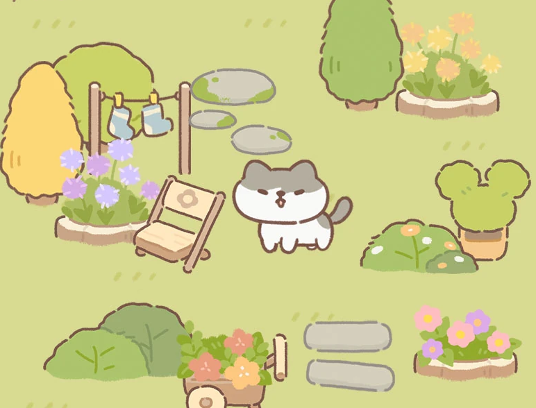
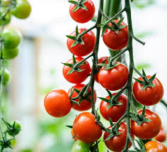
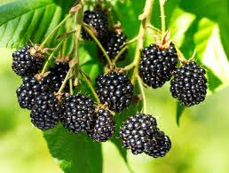
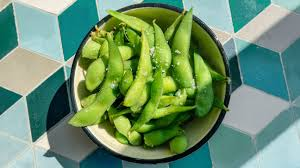
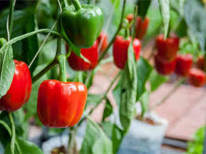
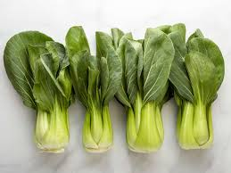
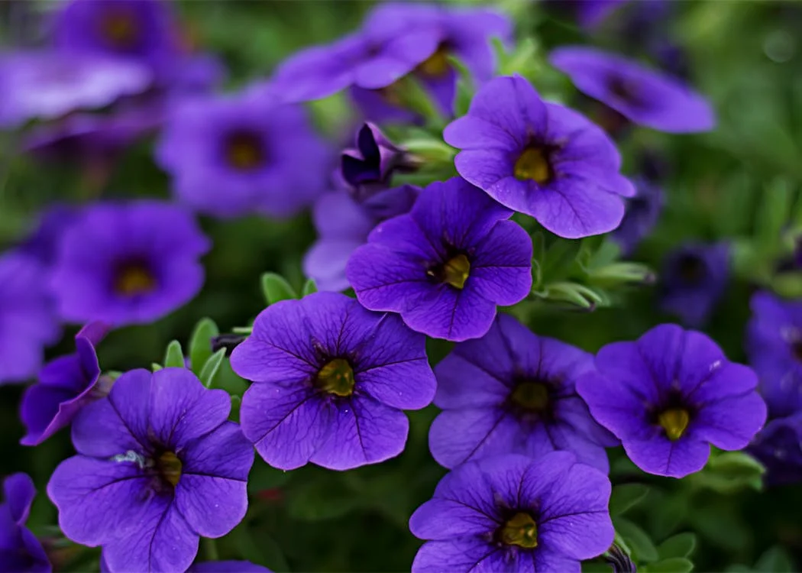
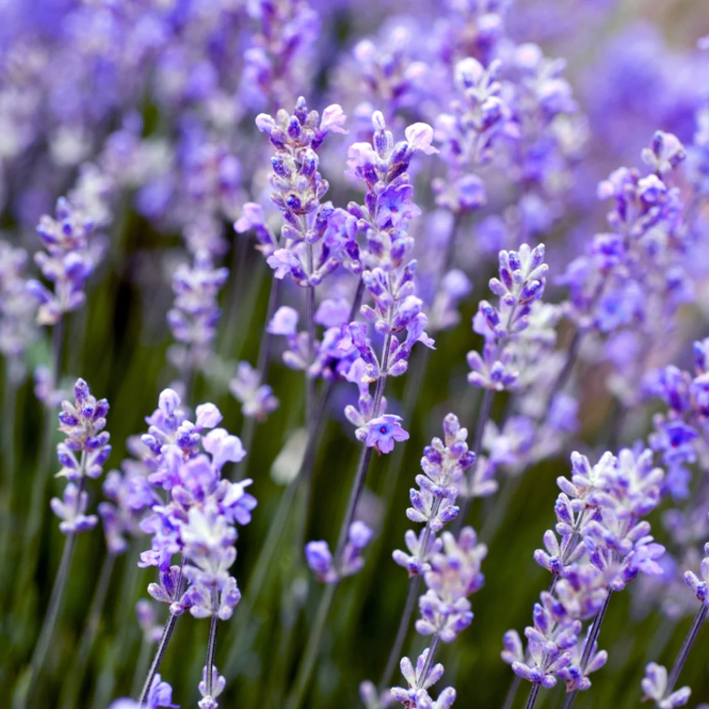
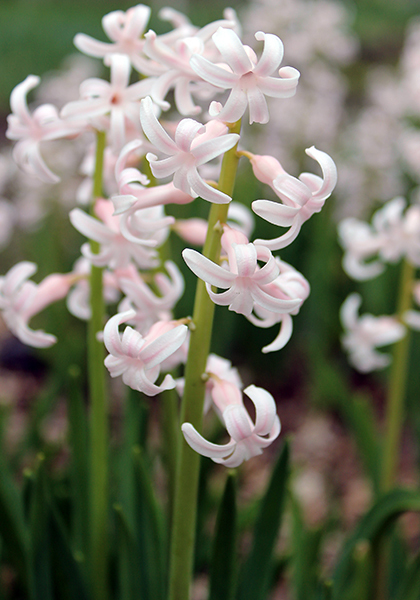

Fun Fact! She enjoys gardening as a hooby.
She gardens as a way to relax from her active schedule since she often travels from LA to Indonesia.She usually updates her fans with new plants on her instagram.
Her Garden
Niki has a variety of different plants ranging from flowers to vegetables. Let's look at the different types she has!
Potatoes

Tomatoes
Blackberries
Edemame

Red Peppers
Bok Choy
She also has flowers:
Petunias
Lavender
Hyacinth
